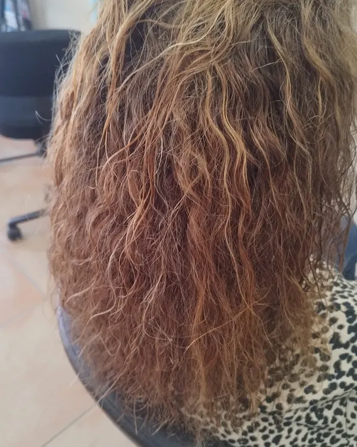
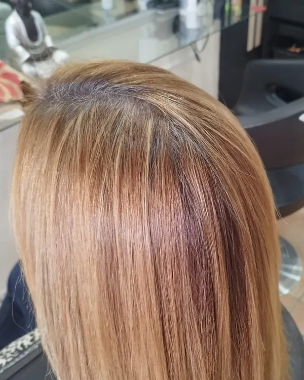
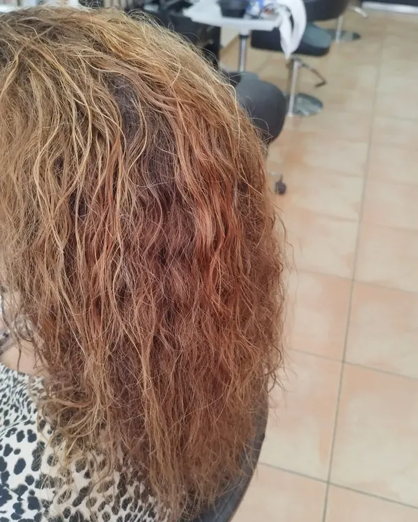
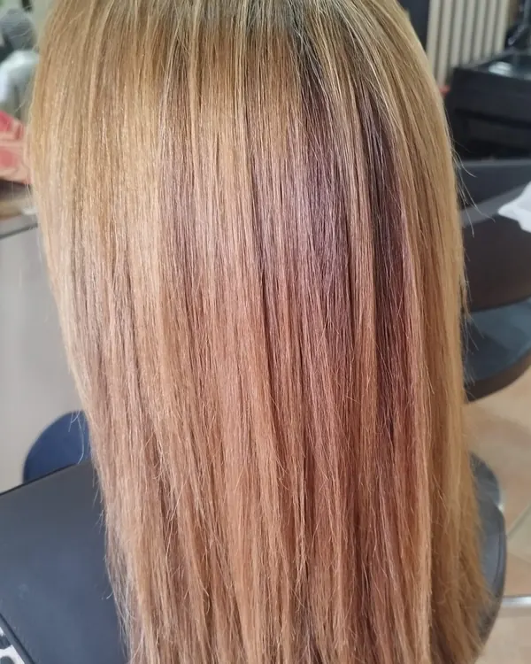

Todas las fotos y vídeos son de clientas y clientes reales del centro, sin filtros. Elige un apartado:
Antes y después
Alisado permanente
Del encrespado al liso con brillo. Desliza la barra sobre la foto para ver el cambio.




Color
Mechas
Rubios luminosos, beiges naturales y platas que suavizan la cana. Pulsa una foto para verla en grande.


Volumen y rizo
Moldeador
Así trabajamos el moldeador: enrollamos mechón a mechón para conseguir un rizo o una onda con volumen que dura semanas.


En vídeo
Prótesis capilar
Prótesis capilares indetectables, con bases transpirables y cómodas para tu día a día. Se adaptan a tu cabello en color y forma, no se mueven ni se despegan.
Si la alopecia te preocupa, podemos ayudarte a recuperar tu imagen.
¿Te gustaría un cambio así?
Cuéntanos qué buscas y te asesoramos sin compromiso.